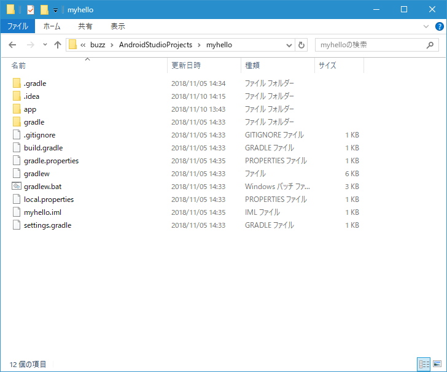
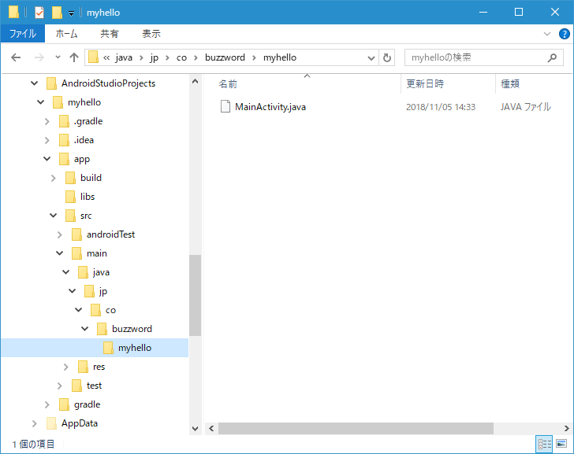
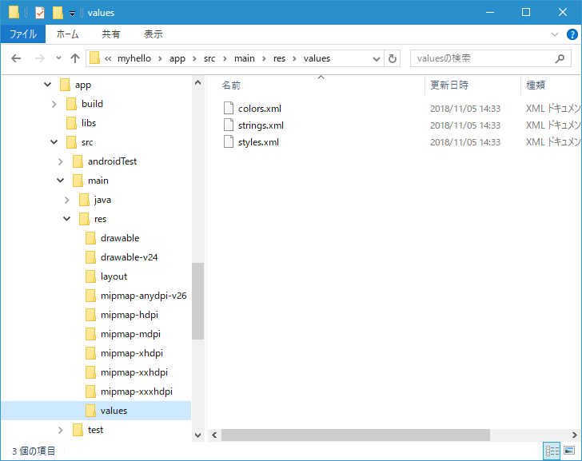
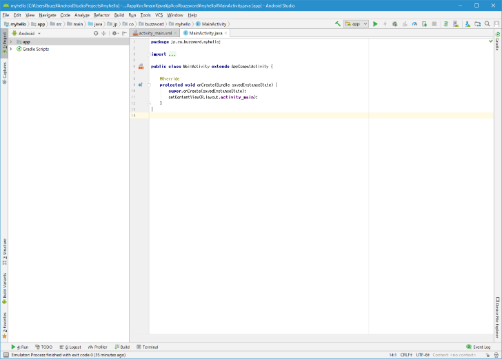
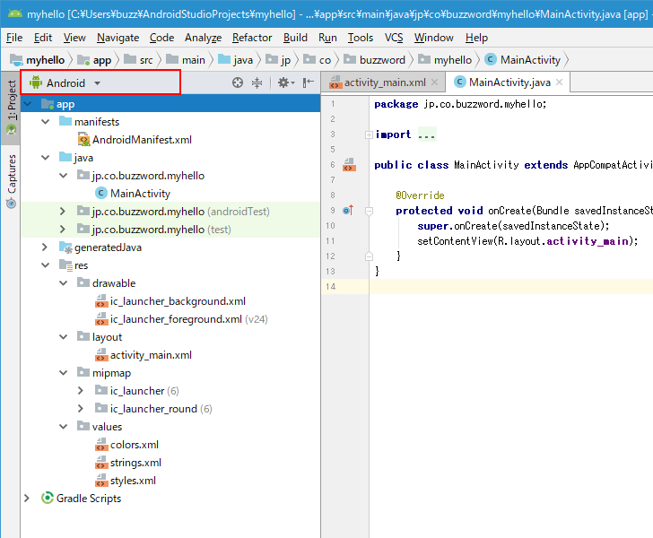
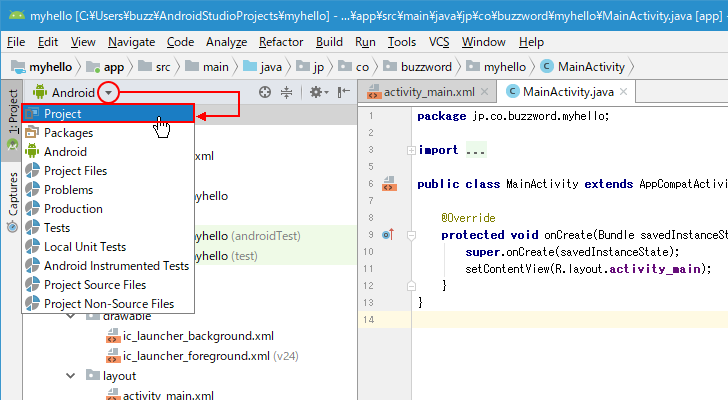
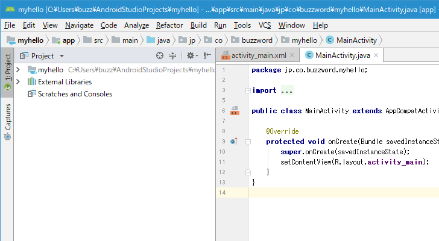
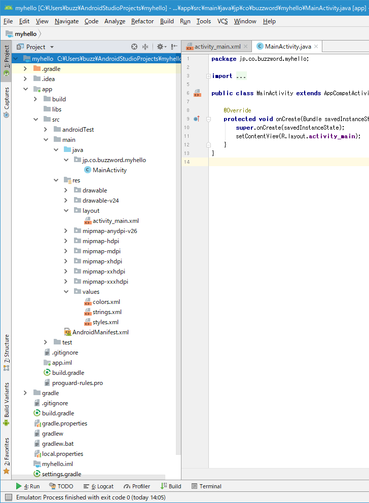

プロジェクトを作成した時に自動で作成されるファイルを確認する
Android Studioで新しいプロジェクトを作成するとアクティビティに関する処理が記述されたJavaのソースファイルや、リソースが記述されてXMLファイルなどが自動的に作成されます。ここではプロジェクトを作成したときに作成されるファイルについて確認します。
作成されたファイルを確認する
プロジェクトを作成するとWindows10環境では「C:¥Users¥(ユーザー名)¥AndroidStudioProjects¥(プロジェクト名)」に自動的にファイルが作成されます。

ディレクトリの中を見てみると、JavaのソースファイルやXMLファイルが多数作成されていることが確認できます。


「MainActivity.java」をテキストエディタで開いてみます。Android Studioのエディタ画面上でも編集できますし、直接ファイルを開いて編集することもできます。
package jp.co.buzzword.myhello;
import android.support.v7.app.AppCompatActivity;
import android.os.Bundle;
public class MainActivity extends AppCompatActivity {
@Override
protected void onCreate(Bundle savedInstanceState) {
super.onCreate(savedInstanceState);
setContentView(R.layout.activity_main);
}
}
Android StudioのAndroidビューとProjectビューで確認する
次にAndroid Studioの画面で作成されたファイルを確認してみます。

Andrdoi Studioではいくつかのビューを切り替えて表示することができます。デフォルトではAndroidビューが選択されています(画面左上のドロップダウンメニューでAndroidが選択されています)。それでは左側のウィンドウで「app」を展開して表示してみます。

プロジェクトの作成に伴って自動で作成されたファイルが表示されました。ただすべてのファイルが表示されているわけではなく、主要なファイルだけが表示されています。また実際のディレクトリ構成とは異なる形で表示されています。
-- --
続いて画面左上の「Android」と表示されている個所をクリックし、表示されたドロップダウンメニューの中から「Project」をクリックしてください。

Projectビューが表示されます。

左側のウィンドウで「myhello」を展開して表示してみます。

Androidビューの時よりもより多くのファイルが表示され、実際のディレクトリ構成に沿った形で表示されます。
プロジェクトで使用する主なファイルに簡単にアクセスするにはAndroidビューを使用し、その他のファイルも含めて確認したい場合にはProjectビューに切り替えると便利です。
( Written by Tatsuo Ikura )

著者 / TATSUO IKURA
初心者～中級者の方を対象としたプログラミング方法や開発環境の構築の解説を行うサイトの運営を行っています。